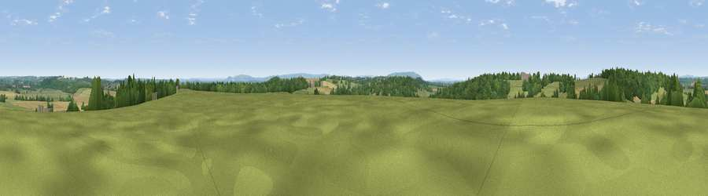

Viewpoint near Church Lench
#30724 in England · top 69% of its area beats it · near Church Lench · path 288 mWhere it is
The exact computed spot (SP 03025 52725). Click the marker for map links.
Public access: the nearest public right of way is about 288 m away — the final stretch may cross private land. Computed from Natural England's CRoW access layer and OpenStreetMap rights of way — not the legal definitive map. Always verify locally.
The view, rendered

A 360° render of this exact spot computed from the terrain model, tree cover and land cover — summer colours, afternoon light, calibrated against photographs of famous viewpoints. Real trees, hedges and buildings will differ in detail.
The panorama
Grey silhouette: terrain skyline in each direction (720 bearings, Earth curvature and refraction included). Dashed green: skyline with trees (+15 m) and buildings (+8 m) as obstacles. Blue strip: how far the ground is visible on each bearing.
Where the view opens
Wedge length = distance to the farthest visible ground on that bearing (vegetation-aware). Rings at 10, 25 and 50 km.
What fills the view
41% grassland · 30% cropland · 28% woodland · 1% built-up
Angular shares of the visible panorama (visual magnitude), not map area. Landscape diversity 0.49 (0–1 Shannon).
Key numbers
More beautiful places nearby
The staircase of upgrades: each row has a higher view potential than everything closer. Driving times are estimates from straight-line distance, calibrated against real road routing — check an actual route before setting out.
| Place | Direction | Drive | Score |
|---|---|---|---|
| Viewpoint near Church Lench | SSW · 1 km | ~4 min | 52.2 |
| Rous Lench Hill | NW · 2 km | ~4 min | 64.0 |
| Viewpoint near Lenchwick | SSW · 5 km | ~11 min | 65.2 |
| Viewpoint near Elmley Castle | SSW · 13 km | ~24 min | 76.9 |
| Viewpoint near Elmley Castle | SSW · 14 km | ~25 min | 79.5 |
| Viewpoint near Elmley Castle | SSW · 14 km | ~26 min | 80.5 |
| Bredon Hill | SSW · 14 km | ~26 min | 83.0 |
| North Hill | WSW · 27 km | ~43 min | 86.8 |
52.17278, -1.95718 · source: screening · position refined by local search. Computed location — check access rights before visiting.